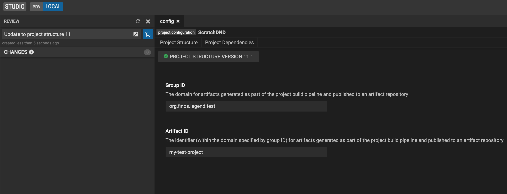
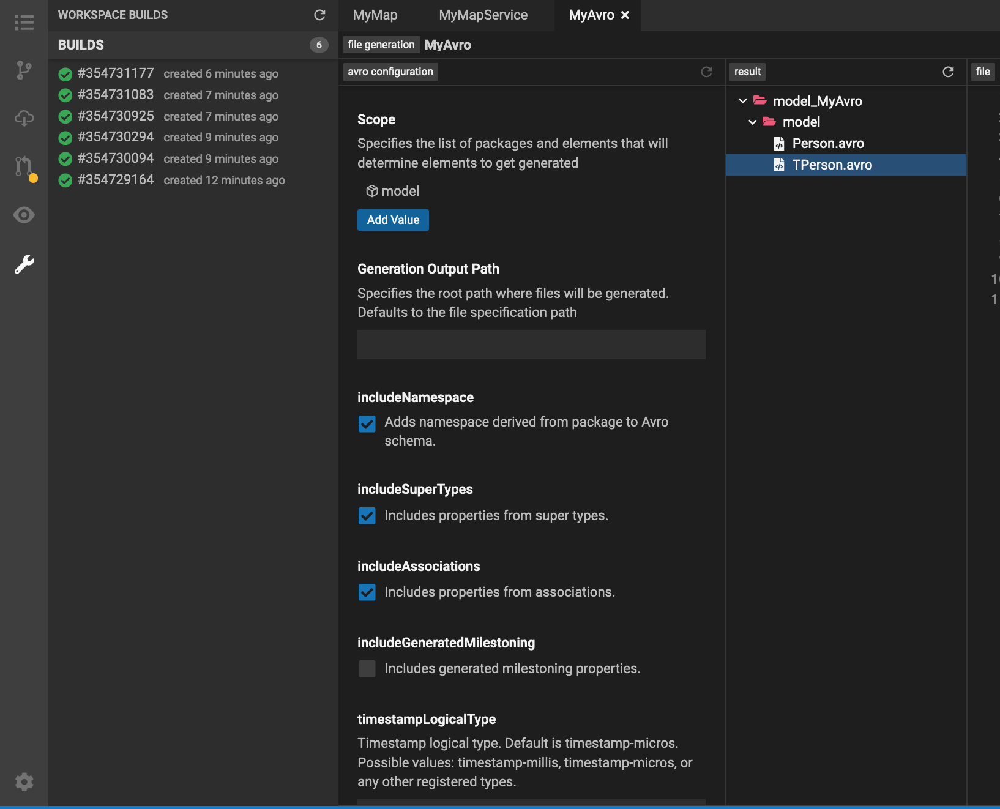

sdlc/project-structure
Project Structure
The Project Structure of a project is the file and directory structure of the project which revolves around the entity files. It contains the required maven poms and maven plugins to run the build for that project.
This project structure adds new features and bug fixes through these files. Therefore to stay up to date with the latest features and bug fixes, it is recommended to stay relatively up to date.
Update Project Structure
You can update to the latest project structure through the configuration editor. Below we are updating from project structure 0.0 to 11.1.


Project Structure 11
Project Structure 11 introduced a variety of new features that run as part of your project pipeline.
Entity Tests and Validation
Validates all elements in your project. Runs all service and mapping tests defined in your project.
File Generation Plugin
Generates files defined in your file generations through the generation specification.
Service Execution Plugin
Generates an executable jar creating executable classes for each service defined in your project. This jar can be consumed by adding it as a dependency to your java project.
You can view the generated jar in your build pipeline after every commit.
From the build panel, you can view all your builds. Clicking on one will take you to the associated pipeline in gitlab.



Generated Service Class
package org.finos.legend.servicestest.test.domain;
import org.finos.legend.engine.language.pure.dsl.service.execution.AbstractServicePlanExecutor;
import org.finos.legend.engine.plan.execution.result.Result;
import org.finos.legend.engine.shared.core.url.StreamProvider;
public class MyTestService extends AbstractServicePlanExecutor
{
public MyTestService()
{
super("domain::MyTestService", "plans/org/finos/servicestest/test/domain/MyTestService.json", false);
}
public Result execute(String state)
{
return execute(state, null);
}
public Result execute(String state, StreamProvider streamProvider)
{
return newSingleParameterExecutionBuilder("state", state).withStreamProvider(streamProvider).execute();
}
}
Model Generation Plugin
Generates additional entities defined by your model generation elements. These entities are included in the entities jar generated as part of the build.
Version Entity Plugin
Generates a versioned entities jar for all the entities in your project.